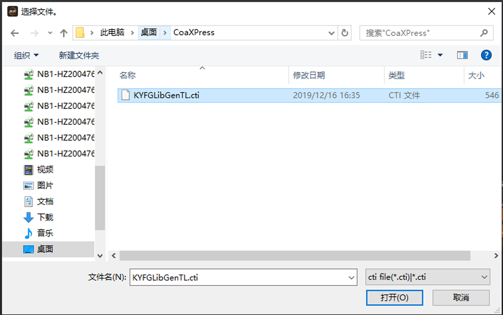
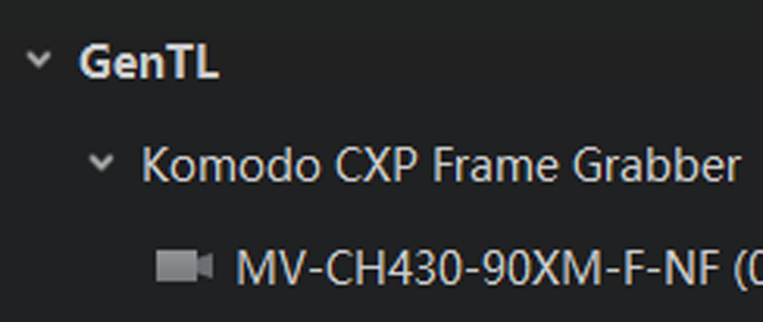

GenTL管理
GenTL标准可提供一个统一的接口，使得客户端在不依赖于底层传输技术的情况下，也能连接相机（包括其他厂商的相机），与相机通信，甚至直接获取相机采集的数据。
-
选择cti文件并打开，如下图所示。
 图 2 选择cti文件说明：
-
在通用设置中设置加载cti文件的默认路径，并开启默认路径功能，则无需操作第1-2步。点击设备列表GenTL右侧的
 ，设备列表将显示加载默认路径下cti文件能搜索到的设备。设置cti默认路径的具体介绍请见通用设置章节。
，设备列表将显示加载默认路径下cti文件能搜索到的设备。设置cti默认路径的具体介绍请见通用设置章节。 -
客户端提供GigE接口和USB接口的cti文件，路径为C:\Program Files (x86)\Common Files\MVS\Runtime。
-
客户端也支持其他厂商的cti文件，cti文件符合GenTL标准即可，例如Kaya® CoaXPress采集卡的cti文件。
-
其他厂商的cti文件请自行获取，若打开cti文件异常，请联系cti文件的提供厂商获得支持。
此时设备列表的GenTL会显示加载该cti文件能搜索到的设备并可进行相关操作，如下图所示。
 图 3 显示CoaXPress相机说明：CoaXPress相机只能GenTL的方式进行操作，可以连接相机、读写参数和采集图像。
-
- 可选操作：
加载cti文件后，可通过设备列表GenTL右侧的手动刷新相机。